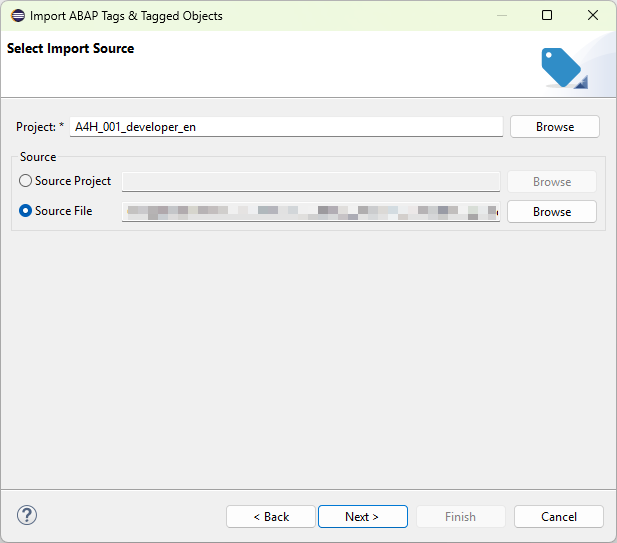

On this page, you can select the ABAP Tags and their associated Tagged Objects to be imported. This allows you
to efficiently manage and organize your imported data.

Page to choose the source
You have two options for selecting the source of the import:
Import from File: Choose this option to import ABAP Tags and Tagged Objects from a local file
on your system.
Import from Project: Select this option to import directly from an existing ABAP project
within your workspace.